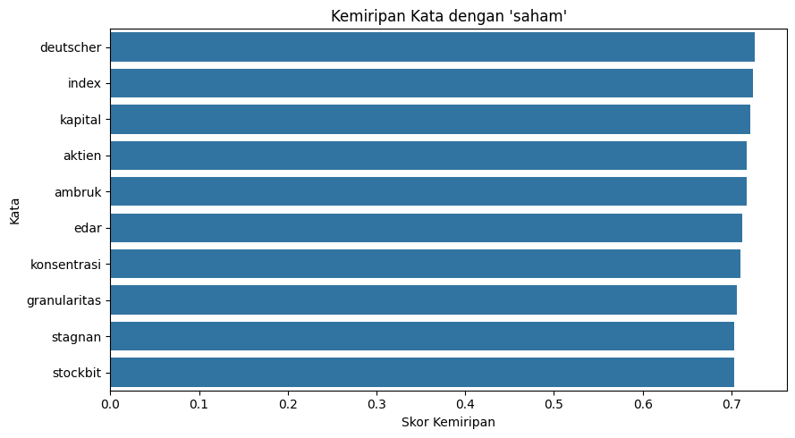
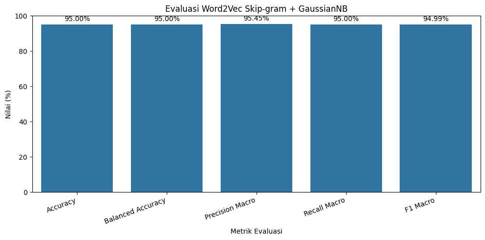
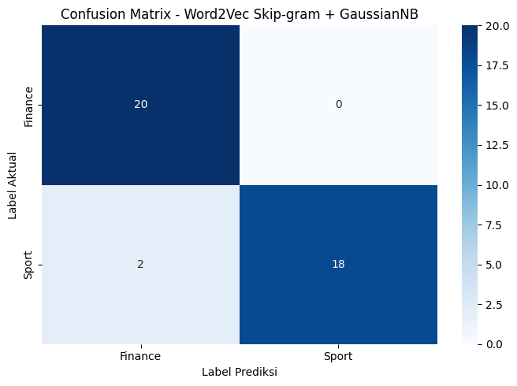

# ============================================================
# KLASIFIKASI BERITA DETIK
# WORD2VEC SKIP-GRAM + GAUSSIAN NAIVE BAYES
# TANPA PCA DAN TANPA MODEL PEMBANDING
# ============================================================
import os
import random
import warnings
import joblib
import numpy as np
import pandas as pd
import matplotlib.pyplot as plt
import seaborn as sns
from pathlib import Path
from gensim.models import Word2Vec
from sklearn.model_selection import train_test_split
from sklearn.naive_bayes import GaussianNB
from sklearn.metrics import (
accuracy_score,
balanced_accuracy_score,
classification_report,
confusion_matrix,
precision_score,
recall_score,
f1_score
)
warnings.filterwarnings("ignore")
# ============================================================
# KONFIGURASI
# ============================================================
SEED = 42
random.seed(SEED)
np.random.seed(SEED)
# Path dataset relatif terhadap folder kerja notebook
BASE_DIR = Path.cwd()
DATA_PATH = BASE_DIR / "Data" / "detik_preprocessed.csv"
OUTPUT_DIR = BASE_DIR / "hasil_skipgram"
OUTPUT_DIR.mkdir(parents=True, exist_ok=True)
LABEL_MAP = {
"finance": 0,
"sport": 1
}
LABEL_NAMES = ["Finance", "Sport"]
print("=" * 75)
print("KLASIFIKASI BERITA DETIK")
print("Word2Vec Skip-gram + Gaussian Naive Bayes")
print("Tanpa PCA dan tanpa model pembanding")
print("=" * 75)
print("\nFolder kerja :", BASE_DIR)
print("Dataset :", DATA_PATH)
print("Folder hasil :", OUTPUT_DIR)
# ============================================================
# TAHAP 1 — MEMUAT DAN MEMERIKSA DATASET
# ============================================================
print("\n" + "=" * 75)
print("TAHAP 1: MEMUAT DATASET")
print("=" * 75)
if not DATA_PATH.exists():
raise FileNotFoundError(
f"Dataset tidak ditemukan: {DATA_PATH}\n"
"Pastikan detik_preprocessed.csv berada di folder Data."
)
df = pd.read_csv(DATA_PATH, encoding="utf-8-sig")
print("\nUkuran dataset awal:", df.shape)
print("Kolom tersedia:", df.columns.tolist())
# Deteksi kolom teks
if "isi_berita_clean" in df.columns:
TEXT_COLUMN = "isi_berita_clean"
elif "isi_berita" in df.columns:
TEXT_COLUMN = "isi_berita"
else:
raise KeyError(
"Kolom teks tidak ditemukan. "
f"Kolom yang tersedia: {df.columns.tolist()}"
)
if "label" not in df.columns:
raise KeyError(
"Kolom 'label' tidak ditemukan."
)
if "id" not in df.columns:
df.insert(0, "id", range(1, len(df) + 1))
# Seragamkan nama kolom teks untuk tahap berikutnya
df = df.rename(
columns={TEXT_COLUMN: "isi_berita_clean"}
)
df["isi_berita_clean"] = (
df["isi_berita_clean"]
.fillna("")
.astype(str)
.str.strip()
)
df["label"] = (
df["label"]
.fillna("")
.astype(str)
.str.strip()
.str.lower()
)
print("\nDistribusi label sebelum pembersihan:")
print(df["label"].value_counts(dropna=False))
# Hanya gunakan kelas Finance dan Sport
df = df[df["label"].isin(LABEL_MAP.keys())].copy()
# Hapus teks kosong
df = df[df["isi_berita_clean"].ne("")].copy()
# Hapus berita duplikat
jumlah_sebelum = len(df)
df = df.drop_duplicates(
subset=["isi_berita_clean"]
).copy()
jumlah_duplikat = jumlah_sebelum - len(df)
# Konversi label menjadi angka
df["label_id"] = df["label"].map(LABEL_MAP).astype(int)
# Tokenisasi berdasarkan spasi.
# Teks diasumsikan telah melalui preprocessing sebelumnya.
df["tokens"] = df["isi_berita_clean"].apply(
lambda text: text.lower().split()
)
df = df[df["tokens"].map(len) > 0].copy()
df.reset_index(drop=True, inplace=True)
if df["label_id"].nunique() != 2:
raise ValueError(
"Dataset harus memiliki kedua kelas: Finance dan Sport."
)
if df["label_id"].value_counts().min() < 2:
raise ValueError(
"Setiap kelas minimal memiliki dua berita."
)
print("\nKolom teks yang digunakan:", TEXT_COLUMN)
print("Jumlah data setelah pembersihan:", len(df))
print("Jumlah berita duplikat dihapus:", jumlah_duplikat)
print("\nDistribusi kelas:")
print(
df["label"].value_counts().rename(
index={"finance": "Finance", "sport": "Sport"}
)
)
print("\nContoh teks:")
print(
df[["id", "isi_berita_clean", "label"]]
.head(5)
.to_string(index=False)
)
df.to_csv(
OUTPUT_DIR / "dataset_model.csv",
index=False,
encoding="utf-8-sig"
)
print("\nDataset model disimpan.")
# ============================================================
# TAHAP 2 — TRAIN-TEST SPLIT
# ============================================================
print("\n" + "=" * 75)
print("TAHAP 2: PEMBAGIAN DATA LATIH DAN DATA UJI")
print("=" * 75)
train_df, test_df = train_test_split(
df,
test_size=0.20,
random_state=SEED,
stratify=df["label_id"]
)
train_df = train_df.reset_index(drop=True)
test_df = test_df.reset_index(drop=True)
y_train = train_df["label_id"].to_numpy()
y_test = test_df["label_id"].to_numpy()
print("Jumlah seluruh data :", len(df))
print("Jumlah data latih :", len(train_df))
print("Jumlah data uji :", len(test_df))
print("\nDistribusi data latih:")
print(
train_df["label"].value_counts().rename(
index={"finance": "Finance", "sport": "Sport"}
)
)
print("\nDistribusi data uji:")
print(
test_df["label"].value_counts().rename(
index={"finance": "Finance", "sport": "Sport"}
)
)
print("\nContoh data latih:")
print(train_df[["id", "label"]].head().to_string(index=False))
train_df.to_csv(
OUTPUT_DIR / "data_latih.csv",
index=False,
encoding="utf-8-sig"
)
test_df.to_csv(
OUTPUT_DIR / "data_uji.csv",
index=False,
encoding="utf-8-sig"
)
# ============================================================
# TAHAP 3 — WORD2VEC SKIP-GRAM
# ============================================================
print("\n" + "=" * 75)
print("TAHAP 3: PELATIHAN WORD2VEC SKIP-GRAM")
print("=" * 75)
sentences_train = train_df["tokens"].tolist()
w2v_model = Word2Vec(
sentences=sentences_train,
vector_size=100,
window=5,
min_count=1,
workers=1,
sg=1,
seed=SEED,
epochs=20
)
print("Pelatihan Word2Vec selesai.")
print("Metode : Skip-gram")
print("Vector size :", w2v_model.vector_size)
print("Window :", w2v_model.window)
print("Minimum count :", w2v_model.min_count)
print("Epochs :", w2v_model.epochs)
print("Jumlah kata unik :", len(w2v_model.wv))
print("\nContoh kosakata:")
print(w2v_model.wv.index_to_key[:20])
w2v_model.save(
str(OUTPUT_DIR / "w2v_model.model")
)
print("\nModel Word2Vec disimpan.")
# ============================================================
# TAHAP 4 — VEKTOR KATA DAN KEMIRIPAN KATA
# ============================================================
print("\n" + "=" * 75)
print("TAHAP 4: ANALISIS VEKTOR KATA")
print("=" * 75)
target_word = "saham"
if target_word not in w2v_model.wv:
# Cari kata yang tersedia sebagai contoh
target_word = w2v_model.wv.index_to_key[0]
print(
"Kata 'saham' tidak ditemukan. "
f"Kata contoh: '{target_word}'"
)
word_vector = w2v_model.wv[target_word]
print("\nKata target:", target_word)
print("Dimensi vektor:", len(word_vector))
print("Vektor kata:")
print(word_vector)
print("\nLima nilai pertama:")
print(word_vector[:5])
if len(w2v_model.wv) > 1:
similar_words = w2v_model.wv.most_similar(
target_word,
topn=min(10, len(w2v_model.wv) - 1)
)
else:
similar_words = []
similarity_df = pd.DataFrame(
similar_words,
columns=["kata", "skor_kemiripan"]
)
print("\nKata paling mirip:")
if similarity_df.empty:
print("Tidak ada kata pembanding dalam kosakata.")
else:
print(similarity_df.to_string(index=False))
vector_df = pd.DataFrame(
[word_vector],
columns=[
f"dimensi_{i + 1}"
for i in range(len(word_vector))
]
)
vector_df.insert(0, "kata", target_word)
vector_df.to_csv(
OUTPUT_DIR / "hasil_vektor_kata_skipgram.csv",
index=False,
encoding="utf-8-sig"
)
similarity_df.to_csv(
OUTPUT_DIR / "hasil_kemiripan_kata_skipgram.csv",
index=False,
encoding="utf-8-sig"
)
if not similarity_df.empty:
plt.figure(figsize=(9, 5))
sns.barplot(
data=similarity_df,
x="skor_kemiripan",
y="kata"
)
plt.title(f"Kemiripan Kata dengan '{target_word}'")
plt.xlabel("Skor Kemiripan")
plt.ylabel("Kata")
plt.tight_layout()
plt.savefig(
OUTPUT_DIR / "visualisasi_kemiripan_kata.png",
dpi=300,
bbox_inches="tight"
)
plt.show()
print("\nHasil analisis vektor kata disimpan.")
# ============================================================
# TAHAP 5 — MEMBENTUK VEKTOR DOKUMEN
# ============================================================
print("\n" + "=" * 75)
print("TAHAP 5: MEMBENTUK VEKTOR DOKUMEN")
print("=" * 75)
def get_document_vector(tokens, model):
"""
Vektor dokumen dihitung dari rata-rata vektor kata
yang dikenal oleh model Word2Vec.
"""
vectors = [
model.wv[token]
for token in tokens
if token in model.wv
]
if not vectors:
return np.zeros(
model.vector_size,
dtype=np.float32
)
return np.mean(vectors, axis=0)
X_train_vec = np.vstack([
get_document_vector(tokens, w2v_model)
for tokens in train_df["tokens"]
])
X_test_vec = np.vstack([
get_document_vector(tokens, w2v_model)
for tokens in test_df["tokens"]
])
print("Bentuk X_train_vec:", X_train_vec.shape)
print("Bentuk X_test_vec :", X_test_vec.shape)
zero_train = int(np.all(X_train_vec == 0, axis=1).sum())
zero_test = int(np.all(X_test_vec == 0, axis=1).sum())
print("Vektor nol data latih:", zero_train)
print("Vektor nol data uji :", zero_test)
print("\nContoh lima dimensi pertama dari tiga dokumen latih:")
print(X_train_vec[:3, :5])
if zero_train > 0 or zero_test > 0:
print(
"\nPERINGATAN: terdapat dokumen dengan vektor nol. "
"Periksa kesesuaian preprocessing dan kosakata."
)
train_vectors_df = pd.DataFrame(
X_train_vec,
columns=[
f"dimensi_{i + 1}"
for i in range(X_train_vec.shape[1])
]
)
train_vectors_df.insert(0, "id", train_df["id"].to_numpy())
train_vectors_df["label"] = train_df["label"].to_numpy()
test_vectors_df = pd.DataFrame(
X_test_vec,
columns=[
f"dimensi_{i + 1}"
for i in range(X_test_vec.shape[1])
]
)
test_vectors_df.insert(0, "id", test_df["id"].to_numpy())
test_vectors_df["label"] = test_df["label"].to_numpy()
train_vectors_df.to_csv(
OUTPUT_DIR / "vektor_dokumen_latih.csv",
index=False,
encoding="utf-8-sig"
)
test_vectors_df.to_csv(
OUTPUT_DIR / "vektor_dokumen_uji.csv",
index=False,
encoding="utf-8-sig"
)
print("\nVektor dokumen berhasil disimpan.")
# ============================================================
# TAHAP 6 — KLASIFIKASI GAUSSIAN NAIVE BAYES
# ============================================================
print("\n" + "=" * 75)
print("TAHAP 6: KLASIFIKASI GAUSSIAN NAIVE BAYES")
print("=" * 75)
model_gnb = GaussianNB()
model_gnb.fit(
X_train_vec,
y_train
)
print("Model berhasil dilatih.")
print("Representasi teks : Word2Vec Skip-gram")
print("Algoritma : Gaussian Naive Bayes")
print("PCA : Tidak digunakan")
print("Jumlah fitur :", X_train_vec.shape[1])
print("\nJumlah data latih per kelas:")
print(
pd.DataFrame({
"Kelas": LABEL_NAMES,
"Jumlah": [
int(np.sum(y_train == 0)),
int(np.sum(y_train == 1))
]
}).to_string(index=False)
)
joblib.dump(
model_gnb,
OUTPUT_DIR / "gnb_model.pkl"
)
print("\nModel GaussianNB disimpan.")
# ============================================================
# TAHAP 7 — EVALUASI MODEL
# ============================================================
print("\n" + "=" * 75)
print("TAHAP 7: EVALUASI WORD2VEC SKIP-GRAM + GAUSSIANNB")
print("=" * 75)
y_pred = model_gnb.predict(X_test_vec)
accuracy = accuracy_score(y_test, y_pred)
balanced_acc = balanced_accuracy_score(y_test, y_pred)
precision_macro = precision_score(
y_test, y_pred, average="macro", zero_division=0
)
recall_macro = recall_score(
y_test, y_pred, average="macro", zero_division=0
)
f1_macro = f1_score(
y_test, y_pred, average="macro", zero_division=0
)
precision_weighted = precision_score(
y_test, y_pred, average="weighted", zero_division=0
)
recall_weighted = recall_score(
y_test, y_pred, average="weighted", zero_division=0
)
f1_weighted = f1_score(
y_test, y_pred, average="weighted", zero_division=0
)
# Semua metrik disimpan sebagai angka 0–1
hasil_metrik = pd.DataFrame([{
"Model": "Word2Vec Skip-gram + GaussianNB",
"Accuracy": accuracy,
"Balanced Accuracy": balanced_acc,
"Precision Macro": precision_macro,
"Recall Macro": recall_macro,
"F1 Macro": f1_macro,
"Precision Weighted": precision_weighted,
"Recall Weighted": recall_weighted,
"F1 Weighted": f1_weighted
}])
print("\nA. METRIK EVALUASI KESELURUHAN")
print("-" * 75)
for kolom in hasil_metrik.columns:
if kolom == "Model":
print(f"{kolom}: {hasil_metrik.iloc[0][kolom]}")
else:
nilai = hasil_metrik.iloc[0][kolom]
print(f"{kolom}: {nilai:.4f} ({nilai * 100:.2f}%)")
# Classification report
print("\nB. CLASSIFICATION REPORT")
print("-" * 75)
report_dict = classification_report(
y_test,
y_pred,
labels=[0, 1],
target_names=LABEL_NAMES,
output_dict=True,
zero_division=0
)
report_df = pd.DataFrame(report_dict).transpose()
print(report_df.round(4).to_string())
# Simpan metrik dan classification report
hasil_metrik.to_csv(
OUTPUT_DIR / "hasil_evaluasi.csv",
index=False,
encoding="utf-8-sig"
)
report_df.to_csv(
OUTPUT_DIR / "classification_report.csv",
encoding="utf-8-sig"
)
# Grafik metrik utama
metrik_plot = pd.DataFrame({
"Metrik": [
"Accuracy",
"Balanced Accuracy",
"Precision Macro",
"Recall Macro",
"F1 Macro"
],
"Nilai": [
accuracy,
balanced_acc,
precision_macro,
recall_macro,
f1_macro
]
})
metrik_plot["Persentase"] = metrik_plot["Nilai"] * 100
plt.figure(figsize=(10, 5))
ax = sns.barplot(
data=metrik_plot,
x="Metrik",
y="Persentase"
)
ax.set_ylim(0, 100)
ax.set_ylabel("Nilai (%)")
ax.set_xlabel("Metrik Evaluasi")
ax.set_title("Evaluasi Word2Vec Skip-gram + GaussianNB")
for container in ax.containers:
ax.bar_label(container, fmt="%.2f%%", padding=3)
plt.xticks(rotation=20, ha="right")
plt.tight_layout()
plt.savefig(
OUTPUT_DIR / "grafik_evaluasi_skipgram.png",
dpi=300,
bbox_inches="tight"
)
plt.show()
# ============================================================
# TAHAP 8 — CONFUSION MATRIX
# ============================================================
print("\n" + "=" * 75)
print("TAHAP 8: CONFUSION MATRIX")
print("=" * 75)
cm = confusion_matrix(
y_test,
y_pred,
labels=[0, 1]
)
print("Urutan kelas: Finance, Sport")
print("\nConfusion matrix:")
print(cm)
plt.figure(figsize=(7, 5))
sns.heatmap(
cm,
annot=True,
fmt="d",
cmap="Blues",
xticklabels=LABEL_NAMES,
yticklabels=LABEL_NAMES
)
plt.title("Confusion Matrix - Word2Vec Skip-gram + GaussianNB")
plt.xlabel("Label Prediksi")
plt.ylabel("Label Aktual")
plt.tight_layout()
plt.savefig(
OUTPUT_DIR / "confusion_matrix_skipgram.png",
dpi=300,
bbox_inches="tight"
)
plt.show()
# ============================================================
# TAHAP 9 — HASIL PREDIKSI DATA UJI
# ============================================================
print("\n" + "=" * 75)
print("TAHAP 9: HASIL PREDIKSI DATA UJI")
print("=" * 75)
hasil_prediksi = test_df[
["id", "isi_berita_clean", "label"]
].copy()
hasil_prediksi["label_aktual_id"] = y_test
hasil_prediksi["label_prediksi_id"] = y_pred
hasil_prediksi["label_aktual"] = (
hasil_prediksi["label_aktual_id"]
.map({0: "Finance", 1: "Sport"})
)
hasil_prediksi["label_prediksi"] = (
hasil_prediksi["label_prediksi_id"]
.map({0: "Finance", 1: "Sport"})
)
hasil_prediksi["hasil"] = np.where(
hasil_prediksi["label_aktual_id"]
== hasil_prediksi["label_prediksi_id"],
"Benar",
"Salah"
)
print("\nSepuluh contoh hasil prediksi:")
print(hasil_prediksi.head(10).to_string(index=False))
print("\nRingkasan hasil prediksi:")
print(hasil_prediksi["hasil"].value_counts())
hasil_prediksi.to_csv(
OUTPUT_DIR / "hasil_prediksi_data_uji.csv",
index=False,
encoding="utf-8-sig"
)
# ============================================================
# TAHAP 10 — SIMPAN MODEL DAN METADATA
# ============================================================
print("\n" + "=" * 75)
print("TAHAP 10: SIMPAN MODEL DAN METADATA")
print("=" * 75)
metadata = {
"model": "GaussianNB",
"representasi_teks": "Word2Vec Skip-gram",
"vector_size": 100,
"window": 5,
"min_count": 1,
"sg": 1,
"epochs": 20,
"pca_used": False,
"label_map": LABEL_MAP,
"label_names": LABEL_NAMES,
"random_seed": SEED
}
joblib.dump(
metadata,
OUTPUT_DIR / "metadata_model.pkl"
)
print("Model dan metadata berhasil disimpan.")
# ============================================================
# TAHAP 11 — PREDIKSI BERITA BARU
# ============================================================
print("\n" + "=" * 75)
print("TAHAP 11: PREDIKSI BERITA BARU")
print("=" * 75)
def prediksi_berita_baru(teks, model_w2v, model_gnb):
if not isinstance(teks, str) or not teks.strip():
raise ValueError("Teks berita tidak boleh kosong.")
# Teks sebaiknya telah melalui preprocessing yang sama
tokens = teks.lower().split()
jumlah_token_dikenal = sum(
token in model_w2v.wv
for token in tokens
)
if jumlah_token_dikenal == 0:
raise ValueError(
"Tidak ada token yang dikenal Word2Vec. "
"Gunakan teks dengan preprocessing yang sama "
"seperti dataset pelatihan."
)
vector = get_document_vector(tokens, model_w2v)
vector = vector.reshape(1, -1)
prediksi_id = int(model_gnb.predict(vector)[0])
probabilitas = model_gnb.predict_proba(vector)[0]
return {
"teks": teks,
"jumlah_token": len(tokens),
"jumlah_token_dikenal": jumlah_token_dikenal,
"prediksi": LABEL_NAMES[prediksi_id],
"probabilitas_finance": float(probabilitas[0]),
"probabilitas_sport": float(probabilitas[1])
}
berita_uji = (
"IHSG bergerak menguat seiring peningkatan volume "
"transaksi saham di pasar modal"
)
try:
hasil_berita_baru = prediksi_berita_baru(
berita_uji,
w2v_model,
model_gnb
)
print("\nTeks:", hasil_berita_baru["teks"])
print("Prediksi:", hasil_berita_baru["prediksi"])
print(
"Probabilitas Finance:",
f"{hasil_berita_baru['probabilitas_finance']:.4f}"
)
print(
"Probabilitas Sport:",
f"{hasil_berita_baru['probabilitas_sport']:.4f}"
)
pd.DataFrame([hasil_berita_baru]).to_csv(
OUTPUT_DIR / "hasil_prediksi_berita_baru.csv",
index=False,
encoding="utf-8-sig"
)
except ValueError as error:
print("Prediksi tidak dapat dilakukan:", error)
# ============================================================
# TAHAP 12 — RINGKASAN FILE OUTPUT
# ============================================================
print("\n" + "=" * 75)
print("TAHAP 12: RINGKASAN OUTPUT")
print("=" * 75)
for filepath in sorted(OUTPUT_DIR.iterdir()):
if filepath.is_file():
print(
f"{filepath.name} "
f"({filepath.stat().st_size / 1024:.2f} KB)"
)
print("\nLokasi hasil:", OUTPUT_DIR.resolve())
===========================================================================
KLASIFIKASI BERITA DETIK
Word2Vec Skip-gram + Gaussian Naive Bayes
Tanpa PCA dan tanpa model pembanding
===========================================================================
Folder kerja : d:\webmining
Dataset : d:\webmining\Data\detik_preprocessed.csv
Folder hasil : d:\webmining\hasil_skipgram
===========================================================================
TAHAP 1: MEMUAT DATASET
===========================================================================
Ukuran dataset awal: (199, 3)
Kolom tersedia: ['id', 'isi_berita_clean', 'label']
Distribusi label sebelum pembersihan:
label
sport 100
finance 99
Name: count, dtype: int64
Kolom teks yang digunakan: isi_berita_clean
Jumlah data setelah pembersihan: 198
Jumlah berita duplikat dihapus: 1
Distribusi kelas:
label
Sport 99
Finance 99
Name: count, dtype: int64
Contoh teks:
id isi_berita_clean label
1 indonesia catat sejarah di dunia senam mereka jadi tuan rumah pertama untuk ajang asi gym fo life challenge ajang nama lengkap st asi gym for life challenge presented by poza sport academy langsung di gelanggang inovasi dan kreativitas universitas gadjah mada gik ugm yogyakarta oktober ajang perdana di bawah naung asi gymnastics union agu ini hadir grup dari tujuh negara yakni indonesia grup sri lanka jepang korea selatan malaysia thailand dan denmark ada lima eksper yang tindak bagai evaluator dalam gelar ini mereka adalah arak tatsuo dan yumiko itoh asal jepang monika siskova dari slovakia junghyun choi asal korea selatan serta denny malik dari indonesia ketua umum federasi gimnastik indonesia ita yuliati apresiasi percaya agu kepada indonesia untuk jadi tuan rumah edisi perdana sekaligus tegas bahwa gymnastics for all bawa pesan sama tanpa batas usia maupun latar belakang apresiasi kepada agu yang telah percaya selenggara asi gym for life challenge edisi perdana kepada indonesia ini bukan tentang dari mana kita asal berapa usia kita atau bahasa apa yang kita guna lalu gimnastik kita dapat hubung raya sama dan saling inspirasi ujar ita dalam sambut st asi gym for life challenge resmi buka oleh anggota komite eksekutif world gymnastics sekaligus wakil presiden agu zona asia tenggara srayuth patanasak turut hadir wakil ketua tim gerak pkk diy gusti kanjeng bendara raden ayu adipati gkbraa paku alam yang rupa istri wakil gubernur diy kgpaa paku alam x dalam sambut srayuth apresiasi komitmen indonesia yang dalam beberapa tahun akhir aktif jadi tuan rumah bagai ajang gimnastik internasional indonesia rupa tuan rumah yang luar biasa selamat kepada federasi gimnastik indonesia di bawah pimpin ita yuliati atas dedikasi dan komitmen hadir ajang perdana ini kita tahu bahwa indonesia makin aktif selenggara bagai ajang gimnastik internasional ujar srayuth selenggara ini makin kuat rekam jejak indonesia dalam gelar ajang gimnastik tingkat asia dan dunia pada indonesia sukses jadi tuan rumah rd fig artistic gymnastics world championships di indonesia arena jakarta belum indonesia juga pernah gelar th junior artistic gymnastics asi championships pada di istora senayan jakarta gymnastics for all rupa disiplin dalam world gymnastics yang depan partisipasi inklusif bagi masyarakat dari bagai usia tingkat mampu dan latar belakang mrp yna sport
2 sean gelael dan team wrt punya kans naik podium di hours of barcelona sebab mereka akan start dari posisi enam ini berkat tampil solid pada sesi kualifikasi kelas lmgt fia world endurance championship di circuit de barcelona catalunya sabtu darren leung yang absen panjang jumat karena ikut program balap lain di gt world challenge europe di portimao portugal langsung beri banyak tugas pada free practice telah itu balap inggris sebut mampu jalan peran bagus di babak qualifying ketika hasil lolos tim ke sesi hyperpole leung ada di p sean punya tugas tidak mudah di hyperpole dengan mobil yang lebih berat karena regulasi balance of performance bop susul menang wrt pada putar belum di fuji jepang sean mampu bawa mobil bmw m di p start dari p tentu bukan posisi yang buruk dan jalan balap prediksi makin tarik karena karena kira bakal turun hujam walau begitu sean leung dan augusto farfus nyata siap dengan segala kondisi yang mereka hadap besok sean dan darren telah laku tugas dengan sangat baik sehingga kita bisa di p dan untuk balap besok kami ingin jalan balap hebat lagi kata farfus dalam rilis kepada detiksport pole position kelas lmgt rebut oleh tim garage lewat balap tom flemming sementara itu tim debut genesis magma racing cara kejut akan start depan di kelas hypercar lewat balap mathys jaubert race hours of barcelona bisa saksi langsung via livestreaming di youtube kuy entertainment minggu mulai pukul wib sean partisipasi di fia wec berkat dukung dari kfc indonesia pertamax turbo pertamina fastron telkomsel dan bank aladin syariah mrp adp sport
3 tiga balap team wrt bakal bagi tugas akhir pekan ini sean gelael dan augusto farfus fokus di fia wec sementara darren leung harus tampil di gtwce dua free practice fp hours of barcelona jumat bagi team wrt hanya laku oleh sean dan farfus karena leung ada di portimao untuk ajang gt world challenge europe farfus buat catat menit detik dan tempat wrt di p pada fp sementara pada fp yang lebih utama laku race run sean buat menit detik untuk ada di p leung yang panjang jumat ada di portimao untuk tuntas fp dan qualifying gt world challenge europe baru gabung dengan sean dan farfus pada sesi fp dan kualifikasi sabtu hadir leung sangat penting di babak qualifying karena cuma balap bronze yang boleh ikut sesi sebut sean silver dan farfus platinum larang tampil bila leung bisa masuk top qualifying baru sean yang tugas di babak hyperpole saya akan bolak balik hari sabtu telah qualifying di wec barcelona saya langsung terbang ke portimao lagi untuk ikut race gtwce tak lama telah tiba di sana telah race di portimao saya terbang lagi ke barcelona ujar leung dalam terang kepada detiksport race hours of barcelona bisa saksi langsung via livestreaming di youtube kuy entertainment minggu mulai pukul wib mrp yna sport
4 tim basket hangtuah manfaat turnamen pramusim all indonesian itu demi bangun fondasi dan kuat chemistry jelang ibl tim yang baru mulai siap sekitar satu tengah bulan ini memang masih dalam tahap kejar tinggal proses rekrutmen yang cepatmenjadi kunci untuk bisa tampil di pramusim yang langsung di bogor mulai oktober hingga november ini so far memang siap kami belum sempurna tapi ya dengan waktu yang ada kami coba kejar lah coba catching up kata latih hangtuah raden yohanes kristian dalam jumpa pers kenal main di kawasan jakarta selatan sabtu raden juga tegas bahwa fokus utama tim di all indonesian adalah lihat jauh mana fondasi awal bentuk ini kan kalau bilang kami reset lagi awal lagi dari main main yang kami rekrut kolaborasi dengan main yang masih stay juga jadi saya mau lihat fondasi awal kami itu jauh mana untuk liga nanti tutur salah satu rekrut baru hangtuah teemo tan ungkap hal nada bagai main ia akan usaha untuk percaya apa yang jadi strategi latih demi maju tim lebih ke chemistry juga saya bagai main fully trust ke coaches apa instruksi tanggung jawab saya jalan dengan persen ujar teemo teemo rupa mantan main prawira bandung putus gabung dengan hangtuah jadi sempat besar untuk apalagi comeback ke bandung tahu hangtuah tengah dalam upaya pindah kandang dari jakarta ke bandung bisa bilang alas cara garis besar hangtuah kasih sempat yang paling bagus lah banding semua terus tambah lagi karena ada sempat buat kembali ke bandung kok enak ujar teemo karena bandung tuh sudah bisa bilang jadi rumah buat saya jadi kayak buat bela bandung tuh sesuatu hal yang sangat besar buat saya lanjut manajemen hangtuah tak beban tim target tinggi di pramusim nanti selain performa selamat main jadi priorita agar siap persen saat liga mulai januari kami jalan game by game dengan maksimal mungkin yang penting selain performa bagus selamat main juga lebih penting tuju liga kata raden sementara untuk ibl hangtuah bidik peringkat lebih baik dari musim belum yakni ranking tujuh target dari manajemen adalah peringkat yang lebih baik dari tahun lalu pungkas raden mcy aff sport
5 atlet panah indonesia nurisa dian ashrifah dapat apresiasi besar telah cetak sejarah dengan raih medali emas nomor women s individual pada asi games di jepang nurisa terima bonus uang tunai rp miliar dan buah mobil listrik bonus rp miliar beri oleh ketua satu panah indonesia pan arsjad rasjid sementara itu mobil listrik serah oleh manajer tim panah indonesia azis armand beri bonus sebut laku dalam acara tajuk syukur medali emas panah indonesia di beranda kitchen jakarta selatan jumat malam wib acara itu turut hadir ketua noc indonesia raja sapta oktohari serta ketua akuatik indonesia anindya bakrie prestasi nurisa yang akrab sapa hani jadi catat sejarah bagi panah indonesia medali emas sebut rupa emas pertama yang hasil raih atlet panah indonesia panjang keikutsertaan di asi games arsjad rasjid ungkap rasa syukur sekaligus bangga atas capai sebut turut hasil hani tidak lepas dari kerja keras atlet dukung tim serta doa bagai pihak hari ini adalah hari yang kita syukur kita syukur karena indonesia tidak pernah tang emas di asi games dan ini adalah pertama kali untuk panah indonesia ujar arsjad ia juga sorot hasil tim panah indonesia lewat saing korea selatan yang kenal bagai salah satu kuat utama dunia dalam cabang olahraga sebut bagi arsjad capai ini jadi modal penting untuk hadap target ikut yakni olimpiade di los angeles amerika serikat ia harap hasil hani dapat jadi motivasi bagi atlet dan latih panah indonesia untuk terus tingkat prestasi di tingkat internasional ini adalah ukir sejarah selain kerja keras atlet tetapi juga perlu dukung dan doa harap insyaallah kita bisa dapat medali yang lebih baik lagi nanti di olimpiade kata sementara itu hani aku syukur atas apresiasi yang beri telah hasil sembah emas untuk indonesia atlet usia tahun sebut sampai terima kasih kepada arsjad rasjid azis armand dan iman atas dukung yang terima hani juga aku tidak sangka bisa langsung raih medali emas pada tampil perdana di asi games pertama terima kasih banyak untuk pak arsjad rasjid pak azis dan pak iman yang telah beri apresiasi yang sangat kesan bagi saya tutur hani hasil di asi games makin mantap tekad hani untuk kejar sempat tampil di olimpiade ia aku telah lama simpan impi untuk laga di ajang olahraga besar di dunia sebut iya ingin sekali karena memang dari dulu saya ingin moga bisa ikut olimpiade ujar hani pun harap suatu saat dapat sembah medali olimpiade bagi indonesia bagi capai sebut akan jadi hadiah yang sangat istimewa dalam jalan karier bagai atlet panah jika saya bisa sempat untuk menang medali olimpiade itu suatu hadiah yang spesial buat saya ungkap ran aff sport
Dataset model disimpan.
===========================================================================
TAHAP 2: PEMBAGIAN DATA LATIH DAN DATA UJI
===========================================================================
Jumlah seluruh data : 198
Jumlah data latih : 158
Jumlah data uji : 40
Distribusi data latih:
label
Sport 79
Finance 79
Name: count, dtype: int64
Distribusi data uji:
label
Finance 20
Sport 20
Name: count, dtype: int64
Contoh data latih:
id label
39 sport
91 sport
178 finance
32 sport
2 sport
===========================================================================
TAHAP 3: PELATIHAN WORD2VEC SKIP-GRAM
===========================================================================
Pelatihan Word2Vec selesai.
Metode : Skip-gram
Vector size : 100
Window : 5
Minimum count : 1
Epochs : 20
Jumlah kata unik : 4416
Contoh kosakata:
['dan', 'yang', 'di', 'ini', 'untuk', 'dengan', 'dari', 'dalam', 'jadi', 'indonesia', 'pada', 'sebut', 'itu', 'juga', 'laku', 'ada', 'pasar', 'serta', 'balap', 'usaha']
Model Word2Vec disimpan.
===========================================================================
TAHAP 4: ANALISIS VEKTOR KATA
===========================================================================
Kata target: saham
Dimensi vektor: 100
Vektor kata:
[ 0.04668595 0.05728834 -0.6165915 0.1513645 -0.08161372 0.6861765
-0.46946275 1.0198605 -0.8905655 -0.4895906 -0.34789625 0.05844148
0.39975598 -0.33908537 -0.4374031 -0.4740433 -0.3104465 0.03141099
-1.0488063 -1.1762099 0.13359682 -0.6907145 -0.11750276 0.18863691
0.49259922 -0.35272428 0.32508928 0.8699301 -0.14729002 0.00325431
-0.3633901 -0.19711229 -0.05291343 -0.2738407 0.10862587 0.75196266
-0.9227987 -0.19978516 -0.17050949 0.45912924 -0.41887686 -0.68875533
0.97490245 -0.7422155 -0.07067765 0.52197033 -0.11636294 -0.38158187
0.16030678 -0.1167834 -0.39081603 -0.6771306 -0.31219622 -0.30743667
-0.682744 -0.6085168 0.34161243 0.3148079 -0.62735325 0.5098791
-0.43349546 0.16201788 -0.20047073 0.10164654 0.12572196 -0.33783603
0.18893395 -0.10993484 -0.81465155 0.366455 -0.33086652 -0.5858893
-0.7013892 -0.22395208 -0.34378463 0.1348703 -0.3790301 0.06226436
-0.16884698 0.08984517 0.6274901 -0.5155316 -0.17307201 0.4462259
-0.1640536 0.39745772 0.17459163 -0.68353426 0.44653952 -0.3353678
-0.45719576 0.39357105 -0.31892383 -0.3188034 0.51929194 0.05466735
-0.13721874 0.38721567 -0.83298314 0.61214876]
Lima nilai pertama:
[ 0.04668595 0.05728834 -0.6165915 0.1513645 -0.08161372]
Kata paling mirip:
kata skor_kemiripan
deutscher 0.726285
index 0.724391
kapital 0.721167
aktien 0.717687
ambruk 0.717534
edar 0.712026
konsentrasi 0.709875
granularitas 0.706495
stagnan 0.703240
stockbit 0.702709

Hasil analisis vektor kata disimpan.
===========================================================================
TAHAP 5: MEMBENTUK VEKTOR DOKUMEN
===========================================================================
Bentuk X_train_vec: (158, 100)
Bentuk X_test_vec : (40, 100)
Vektor nol data latih: 0
Vektor nol data uji : 0
Contoh lima dimensi pertama dari tiga dokumen latih:
[[-0.06050626 0.02396429 -0.11456133 0.0991246 -0.03907755]
[-0.02499629 0.13800843 -0.21535544 0.13401143 -0.13507538]
[ 0.02892541 0.05683252 -0.08235133 0.17337804 -0.16902435]]
Vektor dokumen berhasil disimpan.
===========================================================================
TAHAP 6: KLASIFIKASI GAUSSIAN NAIVE BAYES
===========================================================================
Model berhasil dilatih.
Representasi teks : Word2Vec Skip-gram
Algoritma : Gaussian Naive Bayes
PCA : Tidak digunakan
Jumlah fitur : 100
Jumlah data latih per kelas:
Kelas Jumlah
Finance 79
Sport 79
Model GaussianNB disimpan.
===========================================================================
TAHAP 7: EVALUASI WORD2VEC SKIP-GRAM + GAUSSIANNB
===========================================================================
A. METRIK EVALUASI KESELURUHAN
---------------------------------------------------------------------------
Model: Word2Vec Skip-gram + GaussianNB
Accuracy: 0.9500 (95.00%)
Balanced Accuracy: 0.9500 (95.00%)
Precision Macro: 0.9545 (95.45%)
Recall Macro: 0.9500 (95.00%)
F1 Macro: 0.9499 (94.99%)
Precision Weighted: 0.9545 (95.45%)
Recall Weighted: 0.9500 (95.00%)
F1 Weighted: 0.9499 (94.99%)
B. CLASSIFICATION REPORT
---------------------------------------------------------------------------
precision recall f1-score support
Finance 0.9091 1.00 0.9524 20.00
Sport 1.0000 0.90 0.9474 20.00
accuracy 0.9500 0.95 0.9500 0.95
macro avg 0.9545 0.95 0.9499 40.00
weighted avg 0.9545 0.95 0.9499 40.00

===========================================================================
TAHAP 8: CONFUSION MATRIX
===========================================================================
Urutan kelas: Finance, Sport
Confusion matrix:
[[20 0]
[ 2 18]]

===========================================================================
TAHAP 9: HASIL PREDIKSI DATA UJI
===========================================================================
Sepuluh contoh hasil prediksi:
id isi_berita_clean label label_aktual_id label_prediksi_id label_aktual label_prediksi hasil
138 menteri koordinator bidang ekonomi ri airlangga hartarto temu deputi pertama perdana menteri rusia den manturov di bogor jumat temu ini bahas luas mitra antarpelaku usaha tingkat kapasitas industri nasional hingga jaja kolaborasi di sektor kapal dan dirgantara temu ini rupa tindak lanjut dari temu presiden ri prabowo subianto dan presiden rusia vladimir putin di vladivostok rusia pada september serta hasil sidang komisi sama skb ke ri rusia di kazan rusia pada mei jalan dengan arah presiden prabowo subianto airlangga dorong kuat kerja sama ekonomi dan industri dua negara lalu tingkat mitra antarpelaku usaha luas peluang investasi serta jaja kerja sama teknologi dan kembang kapasitas industri dua pihak juga bahas bagai langkah untuk kuat kerja sama di sektor strategis khusus industri kapal dan terbang guna dorong peluang kolaborasi industri antara dua negara tahu hubung dagang indonesia dan rusia terus tunjuk kembang positif pada total dagang dua negara capai usd miliar tingkat sekitar banding yang catat besar usd miliar komoditas seperti minyak kelapa sawit kopi kakao produk tani dan pupuk jadi bagi penting dalam hubung dagang dua negara airlangga sambut baik hadir delegasi bisnis rusia pada trade expo indonesia tei bagai momentum untuk kuat hubung antarpelaku usaha dan buka peluang mitra komersial baru temu bisnis yang selenggara lama tei harap dapat dorong diversifikasi dagang serta luas kerja sama investasi dan industri indonesia dan rusia milik potensi besar untuk terus kuat kerja sama ekonomi yang saling untung kami komitmen untuk dorong tingkat dagang dan investasi luas mitra antarpelaku usaha serta pasti bagai peluang kerja sama dapat ditindaklanjuti jadi langkah langkah konkret yang beri manfaat bagi dua negara ujar dalam terang tulis sabtu nada dengan hal sebut dpm manturov tekan penting kuat hubung antarpelaku usaha bagai faktor utama dalam luas kerja sama dagang dan ekonomi dua negara bangun kontak bisnis rupa faktor kunci dalam luas hubung dagang dan ekonomi bagai tindak lanjut atas partisipasi indonesia bagai negara mitra dalam pamer innoprom di yekaterinburg pada bulan juli lalu maka delegasi bisnis rusia hadir tei pekan ini usaha usaha kami hadir temu business to business bb dengan mitra potensial indonesia serta forum bisnis dengan sesi tematik kena dagang investasi dan kerja sama industri ujar dpm manturov lebih lanjut dua pihak juga bahas kembang indonesia eurasian economic union free trade agreement i eaeu fta janji ini harap dapat buka akses pasar yang lebih luas bagi produk unggul indonesia seperti minyak kelapa sawit kopi kakao tekstil dan furnitur serta kuat hubung dagang dengan negara negara anggota eaeu saat ini proses ratifikasi janji sebut telah dekat tahap selesai dua pihak harap seluruh prosedur yang perlu dapat selesai belum akhir sehingga janji dapat segera laku efektif entry into force eif dan beri manfaat nyata bagi laku usaha dua negara pada akhir temu airlangga dan dpm manturov sepakat untuk terus kuat kerja sama di bagai sektor strategis antara lain tani teknologi industri serta kembang rantai pasok kolaborasi sebut harap dapat terus kembang cara lanjut dan beri manfaat nyata bagi ekonomi dua negara bagai informasi turut hadir damping pada temu ini yakni deputi bidang koordinasi kerja sama ekonomi dan investasi kemenko ekonomi edi prio pambudi serta deputi bidang koordinasi kelola dan kembang usaha badan usaha milik negara kemenko ekonomi ferry irawan akd ega finance 0 0 Finance Finance Benar
41 babak besar denmark open akan saji duel sama wakil indonesia antara jonatan christie dan alwi farhan ini tanggap dua untuk laga esok baik alwi dan jonatan sama sama lolos ke babak dua usai tumbang lawan masing masing di partai besar yang gulir rabu alwi kalah vs ayush shetty india dalam laga tiga gim sementara jonatan takluk lin chun yi taiwan dua gim langsung dasar drawing tunggal putra dua pun pasti jumpa di babak besar laga ini akan jadi temu tiga bagi dua tanding akan langsung kamis besok di babak besar temu alwi dan akan jadi temu tiga kami saya akan nikmat tanding ini kata jonatan dalam terang lalu federasi saya pasti senang dengan improvement alwi yang sangat baik tahun ini sama dia dan ubed sering latih bareng saya sering ke pelatnas juga jadi sparring ujar sementara itu alwi kata bakal fokus pada kesiap diri meski tak tampik rasa senang karena bisa lawan rekan sendiri lebih baik temu senior sendiri karena me represantikan indonesia tapi siapa lawan saya ingin siap diri saya dulu fokus ke diri sendiri saja kata alwi mcy ran sport 1 1 Sport Sport Benar
96 jorge martin aku ada masalah tekan ban di sprint race motogp mandalika martin harus rela gagal podium yang penting nggak celaka pertamina grand prix of indonesia gelar sesi sprint race pada sabtu di sirkuit mandalika lombok ntb balap saji dalam putar marc marquez keluar bagai juara ai ogura dan fabio diginantonio lengkap podium dua dan tiga jorge martin mula bisa pimpin balap di lima lap akhir martin alami masalah ban dan harus lambat laju posisi pertama salip marc marquez dua putar akhir rider aprilia itu harus kembali lorot posisi dua strip karena lebar di tikung ke lalu salip ogura dan diginantonio diri finis empat jorge martin aku ada masalah pada tekan ban depan itu yang buat diri sedikit tengok ke belakang belum salip marc marquez ya saya ada masalah dengan tekan ban kata kepada tnt sports makanya saya harus biar marc lewat saya sedih sih tambah saya benar sudah pimpin dan jaga jarak dengan baik tapi yang penting saya bisa selesai balap tidak diskualifikasi dan tidak celaka tutup posisi jorge martin di klasemen motogp sementara turut kudeta marc marquez marquez sementara punya poin martin punya poin aff cas sport 1 1 Sport Sport Benar
97 marc marquez tang sprint race motogp mandalika the baby alien sungguh sungguh jadi raja sprint race pertamina grand prix of indonesia gelar sesi sprint race pada sabtu di sirkuit mandalika lombok ntb balap saji dalam putar marc marquez keluar bagai juara ai ogura dan fabio diginantonio lengkap podium dua dan tiga lansir dari situs resmi motogp marc marquez terus kukuh diri jadi raja sprint race rider ducati itu telah tang sprint race di sirkuit beda itu jadi rekor yang unggul jorge martin dengan menang marquez tampak makin sulit kejar marc marquez turut sudah tang sprint race untuk ke kali dan jadi rider banyak yang menang unggul jorge martin dengan menang untuk tahu sprint race baru gelar sejak motogp musim dan jumlah putar adalah tengah dari jumlah putar dari balap utama marquez pun sudah cicip podium di sirkuit mandalika telah di empat seri belum gagal balap dan tiga kali dnf akan marquez bisa lengkap buka puasa dengan tang seri balap utama pada minggu besok siang aff cas sport 1 1 Sport Sport Benar
124 laku usaha mikro kecil dan tengah umkm perlu waspada bagai modus tipu digital modus sebut antara lain bukti transfer palsu taut yang mengatasnamakan sedia layan uang hingga minta kode one time password otp yang risiko rugi usaha jika tidak nali sejak awal modus tipu itu tidak hanya dapat ganggu transaksi tetapi juga potensi pengaruh uang usaha dan keluarga pt jalin bayar nusantara jalin bagi dari danantara indonesia gagas gera ibu cek dulu untuk kuat literasi aman transaksi digital khusus bagi perempuan laku umkm vp corporate secretary jalin putu agnia kata aman transaksi digital perlu jalan iring dengan kembang infrastruktur bayar program ini juga laku untuk imbang antara lesat teknologi bayar dengan literasi uang bagai selenggara infrastruktur sistem bayar nasional jalin ingin pasti maju teknologi bayar imbang dengan tingkat literasi aman digital bagi perempuan laku umkm mampu ini penting untuk lindung transaksi langsung usaha dan uang keluarga ujar putu dalam terang tulis sabtu program ini mulai lalu edukasi kepada perempuan di lurah susu ciracas jakarta timur pada jumat giat sebut kerja sama dengan t care dan libat perempuan laku umkm ibu rumah tangga yang jalan usaha kader daya dan sejahtera keluarga pkk serta anggota komunitas perempuan lalu program sebut serta bekal terampil untuk nali transaksi curiga lindung data pribadi serta tentu langkah yang tepat ketika hadap duga tipu edukasi beri lalu digital safety academy yang guna simulasi kasus hari hari masuk cara aman akun dan manfaat kanal adu resmi upaya edukasi ini laku di tengah senjang antara akses dan paham masyarakat hadap layan uang dasar survei nasional literasi dan inklusi uang snlik indeks inklusi uang indonesia capai sedang indeks literasi uang ada di level arti dapat selisih poin persentase antara tingkat inklusi dan literasi uang kondisi ini tunjuk bahwa akses masyarakat hadap layan uang masih perlu imbang dengan tingkat tahu dan terampil dalam guna cara aman sementara itu bank indonesia bi catat volume transaksi bayar digital capai miliar transaksi pada agustus tumbuh cara tahun besar aktivitas transaksi digital buat paham kena aman bayar makin relevan bagi masyarakat masuk laku usaha yang andal transaksi digital dalam giat hari hari untuk luas jangkau edukasi jalin bentuk lebih dari duta aman digital lalu program digital safety ambassador activation para duta akan dapat perangkat edukasi digital safety toolkit dan damping dengan target masing masing edukasi tidak lima orang dengan skema sebut program ini target jangkau terima manfaat tambah di luar serta awal ke depan jalin harap gera ibu cek dulu dapat jangkau lebih banyak komunitas perempuan laku umkm di bagai wilayah indonesia lalu kolaborasi dengan mitra lokal ada ara finance 0 0 Finance Finance Benar
5 atlet panah indonesia nurisa dian ashrifah dapat apresiasi besar telah cetak sejarah dengan raih medali emas nomor women s individual pada asi games di jepang nurisa terima bonus uang tunai rp miliar dan buah mobil listrik bonus rp miliar beri oleh ketua satu panah indonesia pan arsjad rasjid sementara itu mobil listrik serah oleh manajer tim panah indonesia azis armand beri bonus sebut laku dalam acara tajuk syukur medali emas panah indonesia di beranda kitchen jakarta selatan jumat malam wib acara itu turut hadir ketua noc indonesia raja sapta oktohari serta ketua akuatik indonesia anindya bakrie prestasi nurisa yang akrab sapa hani jadi catat sejarah bagi panah indonesia medali emas sebut rupa emas pertama yang hasil raih atlet panah indonesia panjang keikutsertaan di asi games arsjad rasjid ungkap rasa syukur sekaligus bangga atas capai sebut turut hasil hani tidak lepas dari kerja keras atlet dukung tim serta doa bagai pihak hari ini adalah hari yang kita syukur kita syukur karena indonesia tidak pernah tang emas di asi games dan ini adalah pertama kali untuk panah indonesia ujar arsjad ia juga sorot hasil tim panah indonesia lewat saing korea selatan yang kenal bagai salah satu kuat utama dunia dalam cabang olahraga sebut bagi arsjad capai ini jadi modal penting untuk hadap target ikut yakni olimpiade di los angeles amerika serikat ia harap hasil hani dapat jadi motivasi bagi atlet dan latih panah indonesia untuk terus tingkat prestasi di tingkat internasional ini adalah ukir sejarah selain kerja keras atlet tetapi juga perlu dukung dan doa harap insyaallah kita bisa dapat medali yang lebih baik lagi nanti di olimpiade kata sementara itu hani aku syukur atas apresiasi yang beri telah hasil sembah emas untuk indonesia atlet usia tahun sebut sampai terima kasih kepada arsjad rasjid azis armand dan iman atas dukung yang terima hani juga aku tidak sangka bisa langsung raih medali emas pada tampil perdana di asi games pertama terima kasih banyak untuk pak arsjad rasjid pak azis dan pak iman yang telah beri apresiasi yang sangat kesan bagi saya tutur hani hasil di asi games makin mantap tekad hani untuk kejar sempat tampil di olimpiade ia aku telah lama simpan impi untuk laga di ajang olahraga besar di dunia sebut iya ingin sekali karena memang dari dulu saya ingin moga bisa ikut olimpiade ujar hani pun harap suatu saat dapat sembah medali olimpiade bagi indonesia bagi capai sebut akan jadi hadiah yang sangat istimewa dalam jalan karier bagai atlet panah jika saya bisa sempat untuk menang medali olimpiade itu suatu hadiah yang spesial buat saya ungkap ran aff sport 1 1 Sport Sport Benar
130 dua kapal angkut bbm bawa total juta liter pertalite ke bal pada jumat pertamina patra niaga target stok pertalite di bal capai juta liter pada sabtu dua kapal sebut adalah mt pangkal brandan yang sandar di integrated terminal it manggis dengan bawa juta liter pertalite dan mt asi rigel yang sandar di fuel terminal ft sanggar dengan muat juta liter pertalite area manager communication relations csr pt pertamina patra niaga regional jatimbalinus ahad rahedi kata rata rata konsumsi pertalite di bal capai juta liter per hari pasok sebut penuh lalu it manggis dan ft sanggar dalam tiga hari akhir yakni oktober salur pertalite ke spbu capai rata rata juta liter per hari jumlah itu lebih tinggi dari konsumsi hari untuk penuh minta yang belum belum layan akibat stok di spbu habis rata rata konsumsi hari pertalite di bal capai sekitar juta liter yang penuh lalu it manggis dan ft sanggar sementara itu dalam tiga hari akhir yakni oktober rata rata salur pertalite ke spbu telah capai sekitar juta liter per hari salur di atas rata rata konsumsi hari ini laku untuk bantu penuh minta masyarakat yang belum belum layan ketika stok di spbu habis jelas ahad pertamina target stok pertalite di bal capai juta liter pada oktober jumlah sebut kira tara dengan butuh sekitar dua minggu dalam kondisi pasok aman untuk dukung salur bbm banyak spbu siap operasi lama jam rinciannya spbu ada di kota denpasar dan spbu di kabupaten badung pertamina juga operasi it manggis dan ft sanggar lama jam banyak mobil tangki dan awak mobil tangki siaga untuk salur bbm bagi mobil tangki juga alih dari banyuwangi ke bal pertamina koordinasi dengan kodam ix udayana untuk dukung butuh personel operasional dan siap kemudi cadang dengan tetap perhati selamat kerja selain itu pertamina patra niaga dan perintah provinsi bal pakat batas isi bbm maksimal liter untuk kendara roda empat dan liter untuk kendara roda dua atur sebut telah dapat tuju gubernur bal kami terus evaluasi kondisi di lapang dan koordinasi dengan para mang penting agar langkah yang laku sesuai dengan butuh masyarakat kami mohon maaf atas ketidaknyamanan yang jadi serta terima kasih atas erti dan dukung masyarakat tutup ahad fdl fdl finance 0 0 Finance Finance Benar
82 jakarta marco bezzecchi tambah catat menang di kelas premier motogp telah juara pertamina grand prix of indonesia di sirkuit mandalika minggu balap aprilia itu kini koleksi menang di kelas tinggi balap motor grand prix menang di mandalika jadi yang ke bagi bezzecchi di kelas premier ini jadi podium atas yang lima bagi di motogp dalam daftar sebut valentino rossi masih tempat posisi atas dengan menang legenda italia itu raih menang pertama pada dan yang akhir di motogp belanda scroll to continue with content marc marquez ada di posisi dua dengan menang balap spanyol itu catat menang akhir dalam daftar sebut di motogp jepang di bawah rossi dan marquez ada giacomo agostini dengan menang mick doohan dengan menang serta jorge lorenzo yang koleksi menang bezzecchi kini sejajar dengan fabio quartararo yang juga milik menang kelas premier dua masih jauh dari catat para legenda di papan atas tetapi tambah menang di mandalika kuat posisi bezzecchi dalam daftar sebut daftar menang motogp panjang sejarah krs ran sport 1 1 Sport Sport Benar
62 ajang balap gengsi pertamina grand prix of indonesia sukses gelar di pertamina mandalika international circuit lombok nusa tenggara barat pada oktober hasil ini tak lepas dari kuat kolaborasi bagai pihak direktur utama pt pertamina persero simon aloysius mantiri sampai apresiasi dalam kepada seluruh mang penting mulai dari perintah pusat dan daerah selenggara balap hingga aparat aman di balik gelar ini ada dedikasi marshal tenaga medis tugas aman dan bersih rawan kerja serta laku umkm ujar simon dalam terang tulis senin simon juga sampai rasa terima kasih kepada masyarakat indonesia khusus warga lombok sambut hangat dan ramah mereka nilai sangat dukung lancar ajang balap internasional sebut turut sukses pertamina grand prix of indonesia kuat posisi indonesia bagai tuan rumah ajang olahraga kelas dunia hal ini sekaligus mantap kawasan mandalika bagai destinasi sport tourism unggul temu antara ajang olahraga pariwisata budaya dan giat usaha ini turut buka peluang ekonomi yang besar masyarakat bisa ikut ambil bagi cara langsung dalam rantai selenggara acara bagai usaha energi nasional pertamina hadir untuk bawa nama bangsa ke panggung internasional kami ingin momentum ini beri nilai tambah bagi usaha lokal serta kembang talenta nasional tegas simon lebih lanjut dukung pertamina pada ajang balap ini rupa bagi dari kuat ekosistem pertamina group ekosistem ini hubung sektor energi mobilitas pariwisata dengan daya ekonomi warga di sekitar sinergi layan energi terbang dan akomodasi yang hadir pertamina nilai sangat bantu konektivitas langkah strategis ini jalan dengan komitmen usaha dalam dukung pusat pusat tumbuh ekonomi di tanah air di kancah global ajang ini juga jadi sarana yang efektif untuk kenal produk produk nasional misal mitra pertamina enduro dengan vr racing team serta guna bahan bakar pertamax turbo pada mobil selamat safety car libat aktif di ekosistem motorsport dunia ini milik nilai yang sangat strategis utama dalam bangun percaya global hadap merek brand pertamina dan luas peluang kembang pasar ke depan simon harap kembang ekosistem ini bisa terus jalan sambung selain dukung umkm momentum ini harap dapat buka ruang inspirasi bagi lahir balap balap muda di indonesia harap kami semangat kolaborasi ini terus jaga mandalika dapat terus kembang bagai destinasi sport tourism yang jadi ruang bagi talenta indonesia untuk tumbuh dan maju sama pungkas anl ega sport 1 0 Sport Finance Salah
187 menteri koordinator bidang hilir dan transisi sekaligus menteri esdm bahlil lahadalia minta pertamina untuk ganda kapal angkut bahan bakar minyak bbm ke bal hal ini guna kurang antre kendara yang kini sedang jadi di bal pasal kata bahlil dasar lapor dari pertamina antre bbm di bal jadi karena ada kendala pada distribusi yakni ada kendala kirim bbm dari kapal yang pertamina lapor ke saya tadi adalah distribusi dari daerah jawa timur ke bal dan beberapa tempat yang kait dengan kapal saya tadi perintah untuk mereka untuk segera ganda kapal agar tidak jadi kondisi yang tidak ingin di daerah daerah supaya bisa cepat ujar bahlil di kantor menteri esdm jakarta jumat bahlil pun tegas bahwa stok bbm nasional dalam kondisi aman di mana bbm nasional ada di level hari jadi stok bbm nasional insyaallah itu aman terang kait kondisi stok bbm nasional yang biasa ada di level hari akan tetapi kini stok ada di level bahlil turun stok jadi hari utama jadi pada bensin ron sementara itu stok bensin ron ron ron serta solar sebut tidak alami masalah yang jadi geser dari ke hari itu adalah ron kenapa itu jadi karena jadi shifting yang tadi orang pake dan itu di shifting ke karena harga kan cukup beda cukup ekonomis itu itu benar masalah kata ia tegas bahwa dalam minggu ke depan stok bbm nasional akan ada di level hari tapi cara standar nasional clear mungkin untuk capai di angka itu ya kita butuh waktu minggu minggu selesai terang hrp fdl finance 0 0 Finance Finance Benar
Ringkasan hasil prediksi:
hasil
Benar 38
Salah 2
Name: count, dtype: int64
===========================================================================
TAHAP 10: SIMPAN MODEL DAN METADATA
===========================================================================
Model dan metadata berhasil disimpan.
===========================================================================
TAHAP 11: PREDIKSI BERITA BARU
===========================================================================
Teks: IHSG bergerak menguat seiring peningkatan volume transaksi saham di pasar modal
Prediksi: Finance
Probabilitas Finance: 1.0000
Probabilitas Sport: 0.0000
===========================================================================
TAHAP 12: RINGKASAN OUTPUT
===========================================================================
classification_report.csv (0.28 KB)
confusion_matrix_skipgram.png (81.70 KB)
data_latih.csv (799.27 KB)
data_uji.csv (198.77 KB)
dataset_model.csv (998.00 KB)
gnb_model.pkl (3.91 KB)
grafik_evaluasi_skipgram.png (128.15 KB)
hasil_evaluasi.csv (0.24 KB)
hasil_kemiripan_kata_skipgram.csv (0.30 KB)
hasil_prediksi_berita_baru.csv (0.21 KB)
hasil_prediksi_data_uji.csv (81.27 KB)
hasil_vektor_kata_skipgram.csv (2.19 KB)
metadata_model.pkl (0.23 KB)
vektor_dokumen_latih.csv (182.68 KB)
vektor_dokumen_uji.csv (47.04 KB)
visualisasi_kemiripan_kata.png (83.80 KB)
w2v_model.model (3582.39 KB)
Lokasi hasil: D:\webmining\hasil_skipgram